To answer: reply "Section 3: go, as recommended". Or tap Differently on any question or group of screens, then copy the reply from the bar at the foot and add your words.
Saber master admin, home 142 · Hunter 142's admin, Plan of 149, View of 150 · Kestrel 149's admin · Mako 150's admin · Ranger a 142 member
A teal dashed ring marks what is new in the app. A teal edge and new drawing mark a picture drawn for this page; the rest you approved in round 6.
Open questions 7
- Q1Display for an admin who looks after one squadronNo Display card for him until it has something for him.
- Q2A squadron switched off under Show: do its colours stay on Display?They stay, ready for when he switches it back on.
- Q3Four small things on the Display pageReset goes back to the starting colour; each squadron listed; one start everywhere; no Undo step.
- Q4A colour slid and not saved, then a squadron pickedThe pick is refused until he saves or slides it back.
- Q5Bug reports: whose look puts the bell outEach admin's own look puts out only his own bell.
- Q6Bug reports: grey numbers, or your squadron coloursGrey, as you approved.
- Q7A published day signed by another squadron's manIts signed line reads "Hunter · 142", as the box he signed in.
What this section builds 5 groups
- 1The bellNumbers in squadron colours. All approved.
- 2Admin → DisplayApproved; one new drawing of where its card sits. new drawing
- 3Help: bug reportsApproved on a desktop; the phone and a member's own list drawn new. new drawing
- 4The name badge where he only viewsAll approved.
- 5The sign-off boxesAll approved.
- ·Not drawn, and whySix things, each with its reason.
The open questions
Q1. Display for an admin who looks after one squadron
No Display card for him at all until something on it applies to him.
When this happens: Kestrel, 149's admin, has only 149 on his bell. He opens Admin most days to manage 149's people. Squadron colours are the only thing on Display, and he has nothing to colour.
Today Admin has no Display card for anyone, so today looks the same as the first two pictures.
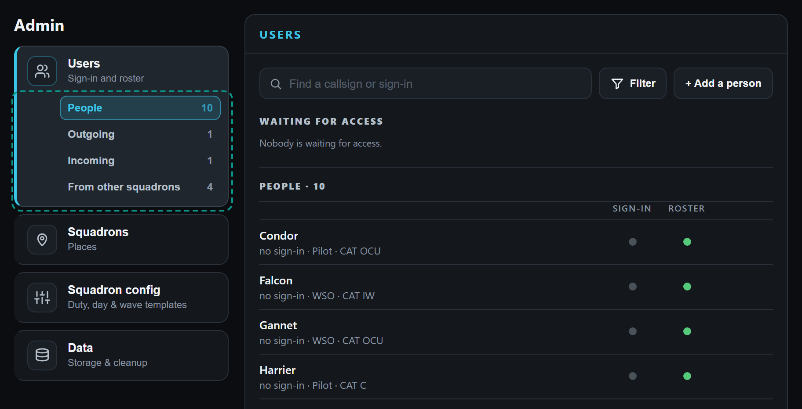
Recommended, desktop new drawing: Kestrel's Admin column ends at Data. The ringed jumps under Users belong to section 2, not to this question.
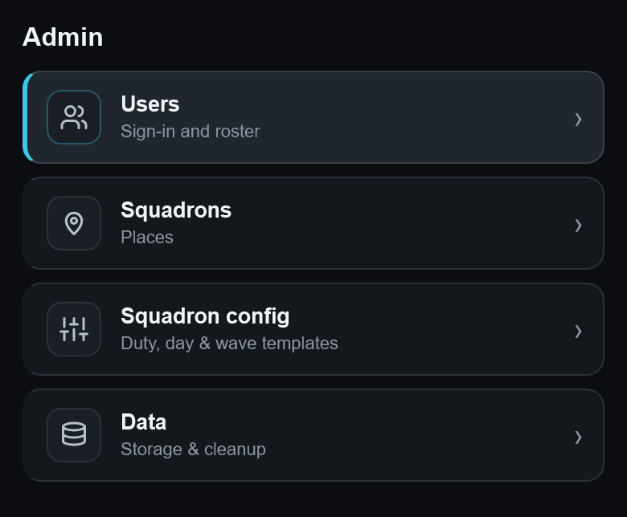
Recommended, phone new drawing: the list ends at Data.
Recommended: no card. It appears by itself the day his bell can show a second squadron, say when a master admin gives Kestrel Plan of 150. Nobody opens a page with nothing on it.
The other choice: the card is always there, and for him its page says one quiet line.
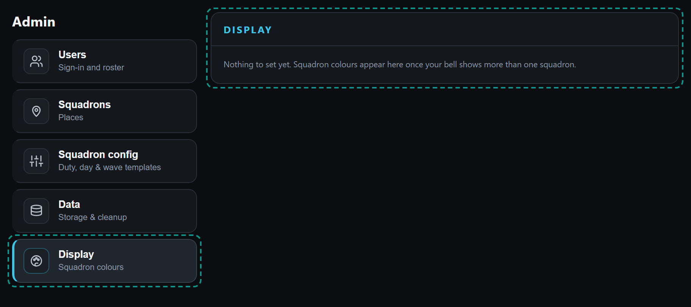
Other choice, desktop new drawing: the Display card under Data, and its page: "Nothing to set yet. Squadron colours appear here once your bell shows more than one squadron."
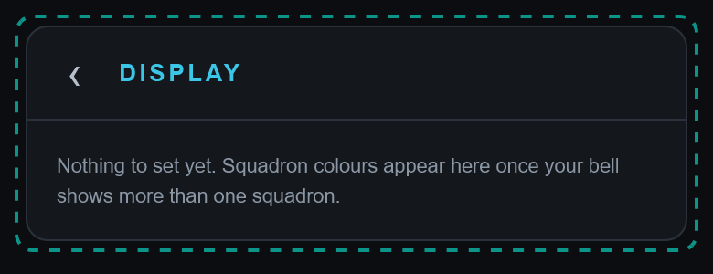
Other choice, phone new drawing: the same line. Kestrel meets a card that does nothing for him every time he opens Admin.
↑ The list
Q2. A squadron switched off under Show: do its colours stay on Display?
They stay, ready for when he switches it back on.
When this happens: now and then. Hunter, who plans 149, switches 149 off under Show for a quiet week. For that week his bell shows only 142's lines.
 The Show buttons at the foot of the bell, each in its squadron's colour. You approved this in round 6.
The Show buttons at the foot of the bell, each in its squadron's colour. You approved this in round 6.
Recommended: Squadron colours, and the Display card, stay for Hunter while 149 is switched off. What counts is that his bell can show more than one squadron, not what is switched on today. So the card never appears and vanishes as he presses Show, and he can set 149's colour before he switches it back on.
The other choice: they go while only one squadron is switched on, and come back when he switches 149 on again.
The bell's own numbers are not this question: with 149 switched off, his bell shows one squadron and so no numbers at all, as approved.
↑ The list
Q3. Four small things on the Display page
Each as recommended below.
When this happens: once, the first time an admin colours his squadrons; again only if he changes his mind.
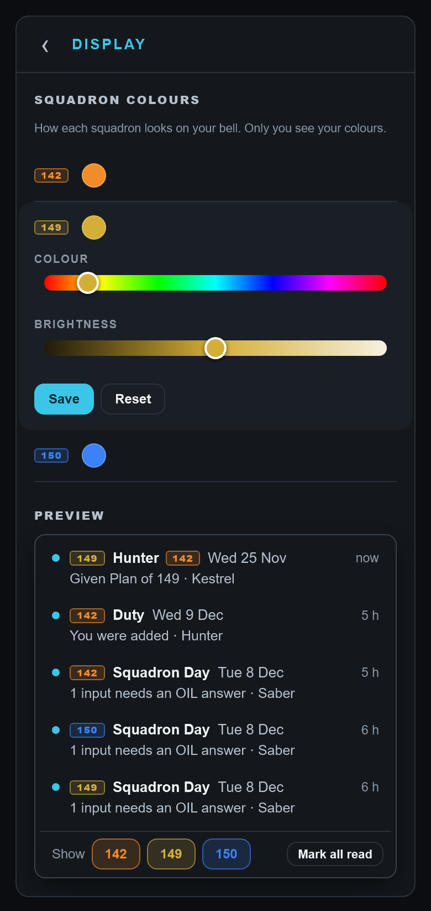
149 opened on Display, with Save and Reset. You approved this in round 6.
a. What Reset does. Hunter made 149 green last week and saved it. Today he presses Reset on 149. Recommended: 149 goes back to the colour it started on, gold. The other choice: Reset only throws away a slide he has not saved yet, and then the button is named "Cancel", the app's word for that.
b. Which squadrons are listed. Saber has 150 switched off under Show. Recommended: 150 is still listed, so he can choose its colour before he switches it on. Every squadron he could switch on is listed. The other choice: only the squadrons switched on.
c. One starting colour everywhere. Before Hunter picks anything, 149 is gold on his PC, gold on his phone, and gold on Kestrel's. Recommended: yes, each squadron's starting colour is the same on every screen until someone picks his own. The other choice: each device starts on its own colours, so 149 could be gold on his PC and blue on his phone.
d. Saving a colour is not an Undo step. Hunter saves 149 green, then presses Undo meaning his last change to the schedule. Recommended: Undo takes back his schedule change and the colour stays, as pressing a Show button is not an Undo step today. The other choice: Undo takes back the colour first.
↑ The list
Q4. A colour slid and not saved, then a squadron picked
The pick is refused until he saves the colour or slides it back.
When this happens: rarely. Hunter slides 149 towards green on Display, has not pressed Save yet, and picks 149 at the top to check its week.
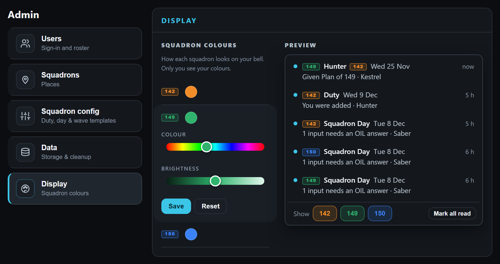
149 slid to green, Save not pressed yet. You approved this in round 6.
Recommended: refused, as with every other form left unsaved. That is the point of the guard rail: no squadron switch while something is left unsaved. A grey note says what to do: "Blocked: save your colour change or slide it back, then pick 149." Not drawn: it is the same grey note as every other, under the squadron picker, on a phone at the foot. Its cost: Display has Save and Reset but no Cancel, and Reset goes back to the starting colour (Q3a). So the only way to drop a slide without saving it is to slide it back by hand.
The other choice: the pick goes through. Nothing on Display belongs to 149 and the colours are his alone; a slide he never saves is simply not kept once he leaves Display.
↑ The list
Q5. Bug reports: whose look puts the bell out
Each admin's own look puts out only his own bell.
When this happens: a few times a month. Osprey, a 149 member, sends a report. Kestrel's bell lights, and so does Saber's. Kestrel opens Help that afternoon.
Today the first admin who opens Help puts the bell out for every admin. Kestrel looks, and Saber's bell goes dark too, so Saber may never know a report came in. (Not pictured: what changes is only whether a bell stays lit.)
Recommended: each admin's own look. Kestrel opens Help and his bell goes out; Saber's stays lit until Saber looks. A report one admin has read is not read by the others. This is how the bell already treats a new access request. Its cost: a bell stays lit for an admin who never opens Help.
The other choice: one look for all, as today.
↑ The list
Q6. Bug reports: grey numbers, or your squadron colours
Grey, as you approved.
When this happens: a few times a month. An admin's bell rings for a new report; he opens Help and reads the list.
The bell now wears your squadron colours; you approved Help's numbers in grey before that. So it is asked again.
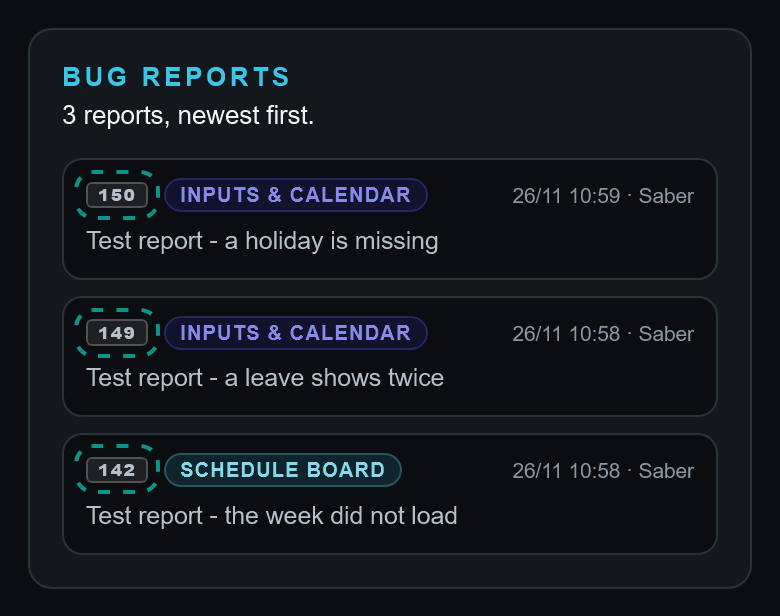
Recommended, phone new drawing: each report's number in grey, as the desktop you approved in round 6.
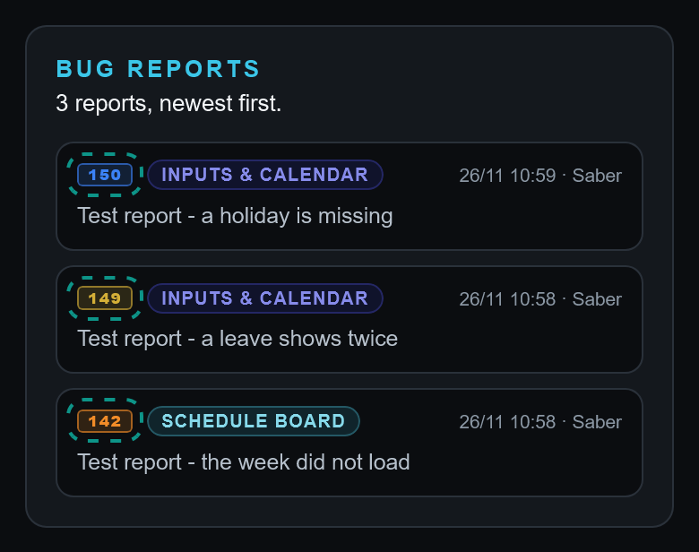
Other choice, phone new drawing: each number in that admin's own squadron colours.
Recommended: grey. Every admin reads every squadron's reports, including one who looks after only one squadron. Kestrel sees 142's and 150's reports but has no colours to set (Q1), so on Help they would wear colours he can never change. Colour stays where he sets it: the bell.
The other choice: each admin's own colours on Help too, so a squadron looks the same on the bell and on Help. Display's line would then read "The colour each squadron's number wears. Only you see your colours."
↑ The list
Q7. A published day signed by another squadron's man
Its signed line reads "Hunter · 142", as the box he signed in.
When this happens: on any day a Plan holder signs. Hunter, who plans 149, signs PLANNED BY on 149's day; Kestrel publishes it; every 149 member reads that day on their phone.
 The box he signs in: "Hunter · 142". You approved this in round 6.
The box he signs in: "Hunter · 142". You approved this in round 6.
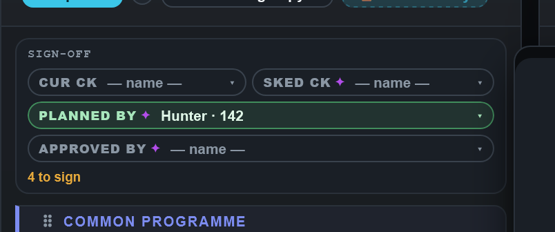
The same on a phone. You approved this in round 6.
Checked in today's app: the published day keeps the signers' names as they were when it was published, with no number. So it would read "Hunter" alone unless the number is kept as well. (The closed box needs a small addition in the build to show "· 142"; that is only making it match what you approved.)
Recommended: yes, "Hunter · 142" on the published day too. 149's members see the signer is from another squadron, in the same words as the box. Drawn before it is built. Because it changes what a published day says, it gets the extra careful check before building.
The other choice: the published day reads "Hunter", as today.
↑ The list
What this section builds
1. The bell
With more than one squadron on his bell, each line starts with its squadron's number in that squadron's colour, the same colour as its Show button. The unread dot stays blue.
 Desktop. "Hunter 142" on the top line: a man's home number after his name wears its colour too. You approved this in round 6.
Phone. You approved this in round 6.
Desktop. "Hunter 142" on the top line: a man's home number after his name wears its colour too. You approved this in round 6.
Phone. You approved this in round 6.
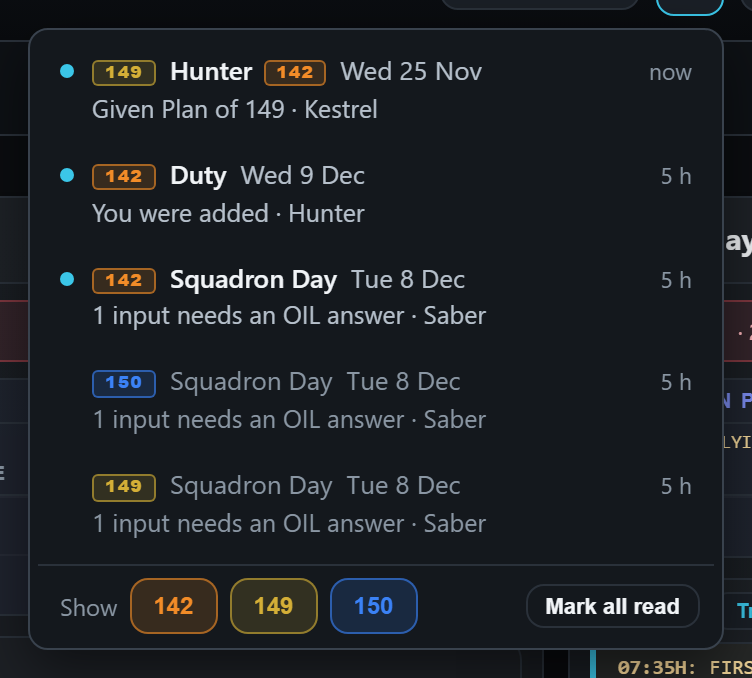
Once read: each number keeps its colour, so a read line still says whose it is. You approved this in round 6.
Lines about his own account keep the number's place empty.
 Desktop: Hunter's two lines about his own access, the column empty. The ringed top line comes with the later transfer work. You approved this in round 6.
Desktop: Hunter's two lines about his own access, the column empty. The ringed top line comes with the later transfer work. You approved this in round 6.
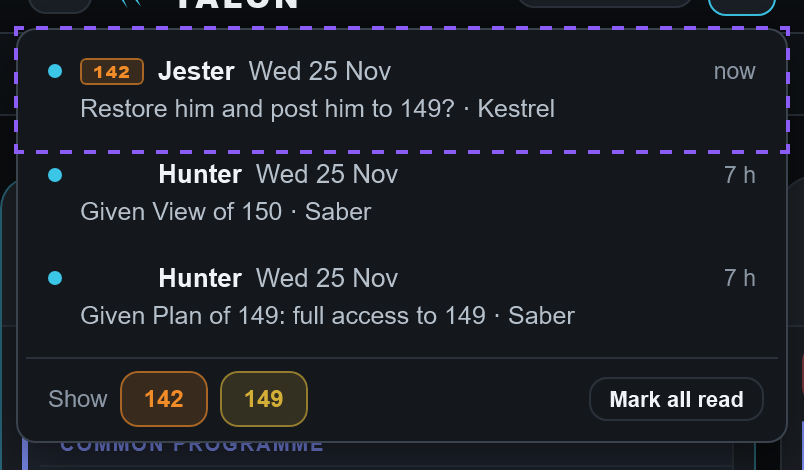
Phone. You approved this in round 6.
↑ The list
2. Admin → Display
A new page under Admin. Its first section, Squadron colours: each squadron with its colour; press one to open a colour slider and a brightness slider, with Save and Reset; a preview of your own bell below, changing as you slide.
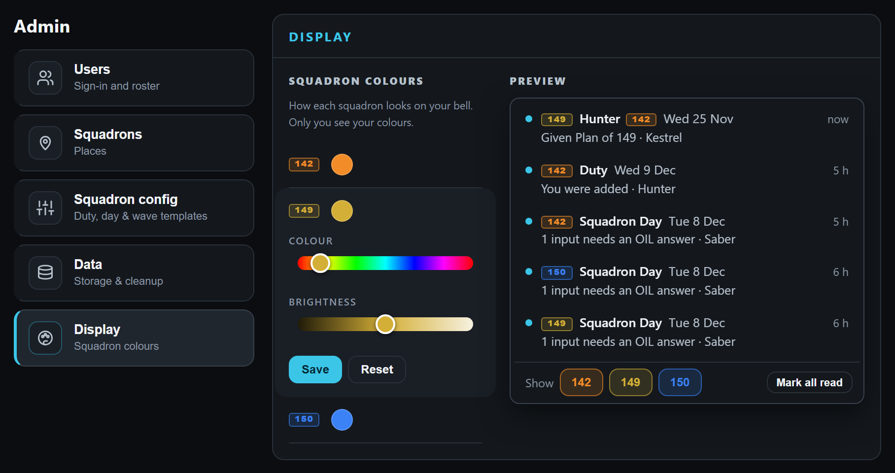
Desktop. You approved this in round 6.
Phone. You approved this in round 6.
Slid: the preview changes before Save. You approved this in round 6.
Where its card sits new drawing: last in Admin's list, under Data. On a desktop it sits under the jumps of Users from section 2; both drawn together for the first time.
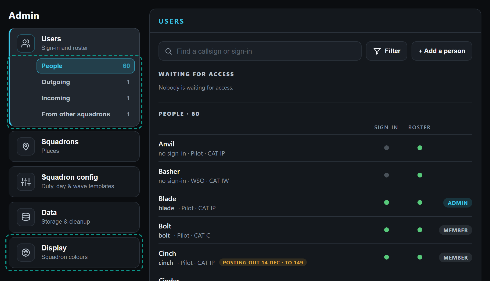
Desktop: Hunter on 142. The jumps under Users and the Display card, each ringed.
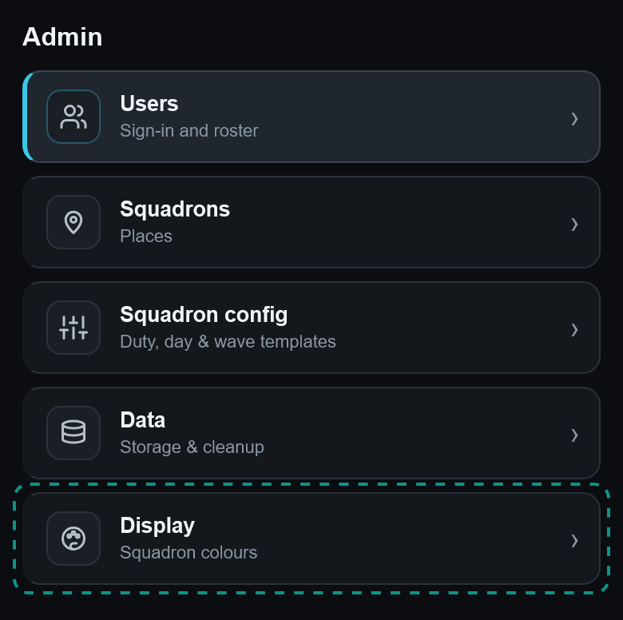
Phone: Display at the foot of Admin's list. A phone has no left column; its jumps sit under the search on the Users page, as you approved.
↑ The list
3. Help: bug reports
One list for every admin, newest first, each report wearing its squadron's number. Reports are kept now, past Logout and a reload.
 Today: nothing says which squadron a report came from.
Today: nothing says which squadron a report came from.
 Desktop. You approved this in round 6.
Desktop. You approved this in round 6.
The phone new drawing: the same list; each report's title line stays on one line at your phone's width. Drawn grey, as recommended in Q6.
Saber's three reports, one sent on each squadron.
A member's own "Your reports" new drawing: no number. He sees only his own reports, so a number would say nothing. Nothing on it is new: it looks as today.
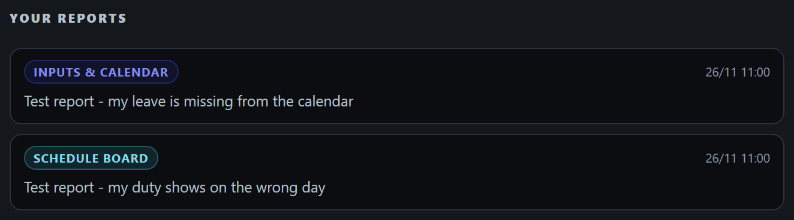
Desktop: Ranger, who views 149, sent one report on 142 and one on 149. Neither wears a number.
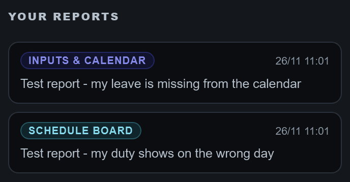
Phone.
↑ The list
4. The name badge where he only views
On a squadron he only views, the badge reads "Hunter · View only" as plain words, not a switch, and the ☰ menu has no "Switch to the member view" there. Where he plans, it reads "Admin" and switches as today.
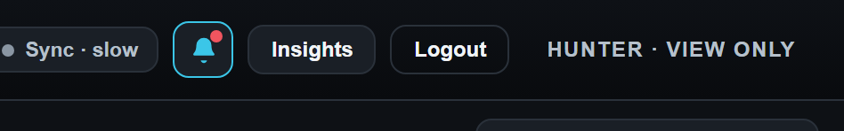
On 150, which he only views. You approved this in round 6.
 On 149, which he plans. You approved this in round 6.
On 149, which he plans. You approved this in round 6.
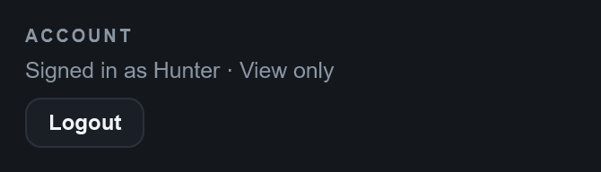
Phone, ☰ menu on 150. You approved this in round 6.
↑ The list
5. The sign-off boxes
A name from another squadron reads "Hunter · 142" in plain letters. Who is offered does not change. The list stays your phone's own list.
Desktop. You approved this in round 6.
Phone. You approved this in round 6.
↑ The list
Not drawn, and why
- The bell with one squadron shown: no numbers at all. It is today's bell.
- The end of the brightness slider: it stops just short of a colour too dark or too pale to read. Only the slider's end differs.
- A sign-off box's open list: it is your iPhone's own list, which cannot be pictured from here. Your own picture of it stands.
- A new report rings only its squadron's admins and a master admin: the bell's usual light; nothing new to see.
- The published day's signed line: drawn before it is built if you answer Q7 yes.
- The order of the Show buttons: waits on your answer to "your home squadron first", asked on section 2's page. Until then, by number as today.
↑ The list